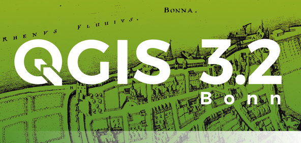
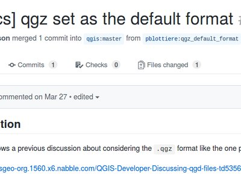
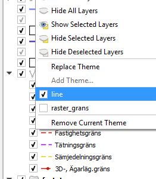
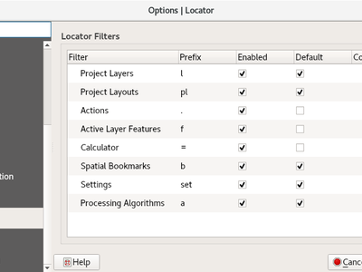
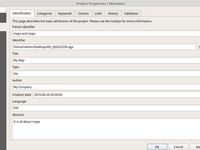
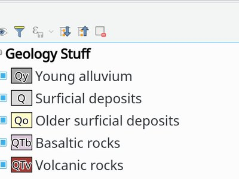

QGIS 3.2 pakeitimai¶

The greatest QGIS release ever! QGIS 3.2 brings a massive list of new changes - the highlights of which we will try to cover here. As always can we remind you that QGIS is an open source project and if you are able to, consider supporting our work through donations, sustaining memberships or contributions to the code documentation, web site and so on.
Ačiū
We would like to thank the developers, documenters, testers and all the many folks out there who volunteer their time and effort (or fund people to do so). From the QGIS community we hope you enjoy this release! If you wish to donate time, money or otherwise get involved in making QGIS more awesome, please wander along to qgis.org and lend a hand!
QGIS is supported by donors and sustaining members. A current list of donors who have made financial contributions large and small to the project can be seen on our donors list. If you would like to become an official sustaining member, please visit our sustaining membership page for details. Supporting QGIS helps us to fund our six monthly developer meetings, maintain project infrastructure and fund bug fixing efforts. A complete list of current sustaining members is provided below - our very great thank you to all of our supporters!
QGIS yra atvira programinė įranga ir jums jokiu būdu neprivalu mokėti norint ją naudoti. Priešingai, mes norime skatinti kiek galima daugiau žmonių naudoti ją nepriklausomai nuo jūsų finansinio ar visuomeninio statuso - mes tikime, kad duodant žmonėms įrankius, teikiančius galimybę daryti erdvinius sprendimus, galima sukurti geresnę visos žmonijos visuomenę.
- QGIS 3.2 versijos rėmėjai
- Bendra
- Žemėlapio įrankiai
- Savybė: žemėlapio paprastinimo įrankis dabar taip pat gali ir glotninti geoobjektus
- Savybė: identifikavimo įrankis su papildomomis parinktimis
- Savybė: taipogi įrašyti ir išplėstų/suskleistų narių būseną žemėlapio temose
- Savybė: automatinis „priartinti prie pažymėjimo“ režimas naujo žemėlapio peržiūrai
- Savybė: paprastinimo metodo pasirinkimas žemėlapio paprastinimo įrankyje
- Savybė: pridėti priartinimą į susijusių geoobjektų formas
- Savybė: kerteziniai plotai/ilgiai/perimetrai identifikavimo rezultatuose
- Išraiškos
- Naudotojo sąsaja
- Savybė: sluoksnių skydelis: filtruotų žemėlapių sluoksnių indikatoriai
- Savybė: galimybė keisti atradėjo filtrų priešdėlius
- Savybė: atvėrimas vektoriaus ir rastro, saugomo HTTP(S), FTP ar debesų paslaugose
- Savybė: greitas skaičiuotuvas paieškos juostoje
- Savybė: klavišų kombinacijos skydelių perjungimui
- Savybė: žymelių paieška
- Savybė: projekto uždarymo ir atšaukimo veiksmai
- Savybė: neįrašytų pakeitimų indikatorius pavadinimo juostoje
- Savybė: konfigūruojamas žemėlapių patarimų rodymo uždelsimas
- Savybė: perkelti sluoksnį ar grupę į sluoksnių skydelio viršų
- Savybė: mygtukas kopijuoti statistikos skydelio turinį į iškarpinę
- Savybė: paieškos nustatymų, parinkčių ir projekto savybių puslapiai iš atradėjo lauko
- Savybė: įlietų sluoksnių ir grupių indikatoriai
- Simbologija
- Braižymas
- Duomenų valdymas
- Formos ir valdikliai
- Sluoksnių legenda
- Žemėlapio maketas
- Apdorojimas
- Savybė: patobulintas „Sujungti lenteles pagal atributą“ algoritmas
- Savybė: įkelti scenarijų iš šablono
- Savybė: geoobjektų filtro algoritmas apdorojimo modeliams
- Savybė: zoninė histograma
- Savybė: Sąjungos, skirtumo ir persidengimo algoritmai migruoti į C++
- Savybė: algoritmas „Projektuoti taškus (Dekarto)“
- Savybė: daugiau algoritmų gavo dinamines parametrų reikšmes
- Savybė: kelių žiedų buferio (pastovaus atstumo) algoritmas
- Savybė: naujas „segmentavimo“ algoritmas
- Savybė: parinktis kurti taškus visose poligono dalyse
- Savybė: geometrijų pavertimo algoritmas
- Savybė: linijos vingiuotumas „Pridėti geometrijos atributus“
- Savybė: importuoti nuotraukas su geo žymomis
- Savybė: x/y koordinačių sukeitimo vietomis algoritmas
- Savybė: nustatyti rikiavimo tvarką vykdant „Pridėti didėjantį lauką“
- Savybė: atstumo parametro vienetų indikatorius
- Savybė: algoritmų žurnalą galima įrašyti/valyti/kopijuoti
- Savybė: pleišto buferio algoritmas
- Savybė: kintamo pločio buferiai
- Savybė: rastro perklasifikavimo algoritmai
- Savybė: sąjungos algoritmas su vienu sluoksniu
- Programos ir projekto parinktys
- Naršyklės
- Duomenų tiekėjai
- Savybė: tinklelio sluoksnių palaikymas
- Savybė: automatiškai nustatyti numatytąjį stilių ArcGIS Feature Server sluoksniams
- Savybė: greitesnės Oracle užklausos
- Savybė: riboti Oracle duombazės jungties lentelių sąrašą iš anksto nurodytoje schemoje
- Savybė: tik skaitymo palaikymas kreivinėms Oracle geometrijoms
- Priedai
- 3D savybės
QGIS 3.2 versijos rėmėjai¶
A special thanks to all our sustaining members, sponsors and donors for helping us to make this release possible!
Bendra¶
Savybė: naujas suspaustas projekto failo formatas .qgz dabar yra numatytasis formatas¶
3.0 versijoje QGZ buvo pridėtas kaip pasirinktinis formatas. Šį formatą padarius numatytuoju palengvės kelias pereinant prie talpos, galinčios įtraukti resursus, tokius kaip SVG, vietinę duomenų kopiją GPKG, spalvų rampas, priedus ir scenarijus.

Šią savybę sukūrė OSLANDIA - Paul Blottiere
Savybė: lauko reikšmių filtravimas Užklausų kūrime¶
Kuriant naują išraiškų filtrą užklausų kūrime, dabar galite filtruoti laiko reikšmes peržiūrėjimo skydelyje

Šią savybę sukūrė Salvatore Larosa
Savybė: PILNO ekrano žemėlapis spaudžiant Ctrl+Shift+Tab¶
Greta Ctrl+Tab dabar galite spausti Ctrl+Shift+Tab, kuris jums parodys žemėlapį ir TIK žemėlapį, jokių įrankinių ar mygtukų (net be lango pavadinimo, kartu su F11). Puikiai tinka Pilno ekrano žemėlapio projektavimui per projektorių dideliuose ekranuose. Galite keisti mastelį ir stumdyti! (Paremta Mathieu Pellerin darbu)

Šią savybę sukūrė Richard Duivenvoorde
Žemėlapio įrankiai¶
Savybė: žemėlapio paprastinimo įrankis dabar taip pat gali ir glotninti geoobjektus¶
Žemėlapio geoobjektų paprastinimo įrankis pervadintas į „Paprastinti/glotninti geoobjektus“ ir dabar palaiko interaktyvų geoobjektų glotninimą.

Šią savybę finansavo North Road
Šią savybę sukūrė Nyall Dawson (North Road)
Savybė: identifikavimo įrankis su papildomomis parinktimis¶
Nauji patobulinimai dabar leidžia naudoti panašius įrankius į pažymėjimo, norint identifikuoti kelis geoobjektus.
Šią savybę finansavo Leicestershire County Council and East Hampshire District Council
Šią savybę sukūrė Martin Dobias and Viktor Sklencar
Savybė: taipogi įrašyti ir išplėstų/suskleistų narių būseną žemėlapio temose¶
Kiekviena žemėlapio tema taip pat įrašo kurie sluoksniai, grupės ir legendos elementai yra išplėsti, kad parinkus žemėlapio temą būtų atstatytos išplėstos/suskleistos būsenos.

Šią savybę finansavo Arpa Piemonte (Dipartimento Tematico Geologia e Dissesto) within ERIKUS project
This feature was developed by Martin Dobias (Lutra Consulting) and Faunalia
Savybė: automatinis „priartinti prie pažymėjimo“ režimas naujo žemėlapio peržiūrai¶
Naujo žemėlapio peržiūra gali būti sukonfigūruota taip, kad automatiškai priartintų dabartinį pažymėjimą. Gali būti kombinuojama su skirtingomis žemėlapio temomis kaip šiame pavyzdyje.

Šią savybę finansavo Technology One
Šią savybę sukūrė Nathan Woodrow
Savybė: paprastinimo metodo pasirinkimas žemėlapio paprastinimo įrankyje¶
Tai leidžia naudoti skirtingas paprastinimo technikas interaktyviame žemėlapio paprastinimo įrankyje, įskaitant ir kartografiškai malonesnį „Visvalingam“ paprastinimo algoritmą.

Šią savybę finansavo North Road
Šią savybę sukūrė Nyall Dawson (North Road)
Savybė: pridėti priartinimą į susijusių geoobjektų formas¶
Pažymėjus vieną ar daugiau įrašų susijusioje lentelėje, geoobjekto atributų subformoje atsiranda naujas mygtukas. Mygtukas priartina žemėlapyje geoobjektus, jei jie turi geometrijas.

Šią savybę sukūrė Jürgen Fischer
Savybė: kerteziniai plotai/ilgiai/perimetrai identifikavimo rezultatuose¶
QGIS 3.2 identifikavimo rezultatų skydelyje dabar rodome ir elipsoidinius, ir kartezinius plotus, ilgius ir perimetrus atskirai. Matant du skirtingus matavimus leidžia naudotojams geriau suprasti galimas problemas ploto ir atstumo skaičiavimuose, kylančias dėl neteisingo projekcijos ar elipsoido pasirinkimo.

Šią savybę finansavo North Road
Šią savybę sukūrė Nyall Dawson (North Road)
Išraiškos¶
Savybė: naujos išraiškų funkcijos¶
- color_grayscale_average()
- color_mix_rgb()
- flip_coordinates()
- wedge_buffer()
- tapered_buffer()
- buffer_by_m()
Nauji kintamieji:
- @project_home
- @project_author
- @project_abstract
- @project_creation_date
- @project_identifier
- @project_keywords
Šią savybę sukūrė Mathieu Pellerin, Nyall Dawson
Savybė: labiau padedantis išraiškų kūrėjas¶
Išraiškų kūrėjas dabar leidžia lengviau kurti išraiškas su QGIS!
- Kūrėjas dabar rodo nuo duomenų priklausančių reikšmių aprašymą, įskaitant ir reikšmių galimą intervalą iš išraiškos
- Ctrl+paspaudus funkcijos pavadinimą bus automatiškai atidaryta dabartinės išraiškos pagalba
- Dabar rodo išraiškų dalių indikatorių su klaidomis
- Rodo pilną klaidų pranešimų sąrašą, gautą nagrinėjant išraišką

Šią savybę finansavo Technology One
Šią savybę sukūrė Nathan Woodrow
Naudotojo sąsaja¶
Savybė: sluoksnių skydelis: filtruotų žemėlapių sluoksnių indikatoriai¶
Pagrindinio lango sluoksnių medžio rodinys (Turinys) dabar turi indikatorius, rodančius, kad vektoriniam sluoksniui pritaikytas filtras. Taip naudotojams paprasčiau suprasti, kad jie mato tik duomenų poaibį. Paspaudus indikatorių paleidžiamas užklausos kūrėjas.
Pridėtas mini-karkasas papildomų piktogramų rodymui sluoksnių medyje, greta sluoksnių ir grupių pavadinimų. Pelės užvedimo tekstas gali būti susietas su indikatoriais, kad suteiktų papildomą indikatorių kontekstą. Papildomai, signalas siunčiamas naudotojui paspaudus indikatorius ir gali būti nustatomi savo veiksmai. Mintis yra ateityje naudoti indikatorius subtiliam pranešimui apie skirtingą informaciją, pavyzdžiui:
- žemėlapio sluoksnis su netinkamomis geometrijomis
- žemėlapio sluoksnis su su momentinio perprojektavimo klaidomis
- žemėlapio sluoksnis turi trūkstamą duomenų šaltinį
- žemėlapio sluoksnis su netinkama CRS

Šią savybę finansavo Arpa Piemonte (Dipartimento Tematico Geologia e Dissesto) within ERIKUS project
This feature was developed by Martin Dobias (Lutra Consulting) and Faunalia
Savybė: galimybė keisti atradėjo filtrų priešdėlius¶
Atradėjo filtrų priešdėlius dabar galima keisti parinkčių dialogo kortelėje „Atradėjas“

Šią savybę finansavo QGIS User Group Switzerland
Šią savybę sukūrė Denis Rouzaud, OPENGIS.ch
Savybė: atvėrimas vektoriaus ir rastro, saugomo HTTP(S), FTP ar debesų paslaugose¶
3.2 duomenų šaltinių tvarkyklės vektorinės ir rastro kortelės gavo galimybę supaprastinti vektorių ir rastro duomenų aibių atidarymą iš HTTP(S), FTP ir debesų paslaugų. Yra bazinė HTTP(S) autentikacijos palaikymas.

Šią savybę sukūrė Mathieu Pellerin
Savybė: greitas skaičiuotuvas paieškos juostoje¶
QGIS 3.2 leidžia įvertinti paprastas išraiškas (tiesą sakant BET KOKIAS išraiškas…, taigi galite naudoti agregavimą ir panašius dalykus, jei tik norite) į paieškos lauką įvedus „= “, po kurio eina išraiška. Jei įvesta tinkama išraiška, naudotojui bus suteikta galimybė kopijuoti rezultatą į iškarpinę.
Pvz. įvedus „= 10/3“ rodomas įrašas „Kopijuoti „3.3333333“ į iškarpinę“.

Šią savybę finansavo North Road
Šią savybę sukūrė Nyall Dawson (North Road)
Savybė: klavišų kombinacijos skydelių perjungimui¶
Ctrl+{nr} klavišų kombinacija
Šią savybę finansavo Technology One
Šią savybę sukūrė Nathan Woodrow
Savybė: žymelių paieška¶
Leidžia ieškoti erdvinių žymelių. Du kartus paspaudus ant paieškos rezultatų, žymelės vieta bus priartinta.
Trumpas video: https://www.youtube.com/watch?v=ymW4TU8QWy4
Naujo filtro pradžioje rašomas priešdėlis „b“ ir tr(„Spatial bookmarks“) kaip rodomas pavadinimas.
Šią savybę sukūrė Klavs Pihlkjær
Savybė: projekto uždarymo ir atšaukimo veiksmai¶
Į „Projektų“ meniu pridėti du nauji veiksmai
- „Uždaryti“: uždaro aktyvų projektą, grąžinant QGIS lango „Paskutiniai projektai“ sąrašą.
- „Atstatyti“: atstato aktyvų projektą į paskutinę įrašytą būseną, išmetant visus neįrašytus pakeitimus

Šią savybę sukūrė Nathan Woodrow, Nyall Dawson
Savybė: neįrašytų pakeitimų indikatorius pavadinimo juostoje¶
QGIS 3.2 veikia standartiniu naudotojo sąsajos būdu - tai, kad projekte yra nepakeistų pakeitimų, indikuoja pridedant priešdėlį „*“ prie projekto pavadinimo programos pavadinimo juostoje. Taip daug paprasčiau pamatyti, ar projekte yra neįrašytų pakeitimų!
Šią savybę finansavo North Road
Šią savybę sukūrė Nyall Dawson (North Road)
Savybė: konfigūruojamas žemėlapių patarimų rodymo uždelsimas¶
Šią savybę sukūrė jdugge
Savybė: perkelti sluoksnį ar grupę į sluoksnių skydelio viršų¶
Perkelia pažymėtą sluoksnį(-ius) ar grupę(-es) į sluoksnių skydelio viršų.
Šią savybę sukūrė Mie Winstrup
Savybė: mygtukas kopijuoti statistikos skydelio turinį į iškarpinę¶
Dabar galima nukopijuoti statistikos skydelio išvesties lentelę į iškarpinę.

Šią savybę sukūrė Mathieu Pellerin
Savybė: paieškos nustatymų, parinkčių ir projekto savybių puslapiai iš atradėjo lauko¶
Trumpas video: https://www.youtube.com/watch?v=duB2YekUmV0
Naujas filtras pasiekiamas su priešdėliu „s“ ir „Nustatymai“ kaip rodomu vardu.
Šią savybę sukūrė Klavs Pihlkjær
Savybė: įlietų sluoksnių ir grupių indikatoriai¶
Įlieti projektų sluoksniai ir grupės dabar išskiriamos patogiu „įlietų“ indikatoriumi, todėl naudotojams iš karto aišku, kurie sluoksniai ir grupės buvo įlietos į projektą.
Šią savybę finansavo North Road
Šią savybę sukūrė Nyall Dawson (North Road)
Simbologija¶
Savybė: gražesnės naujų sluoksnių spalvos¶
Naujiems žemėlapio sluoksniams priskiriamos „atsitiktinės“ spalvos daugiau nebe „atsitiktinės“, o atsitiktinai parenkamos iš iš anksto apibrėžtos „vizualiai malonių“ spalvų paletės. Atsisveikinkite su bjauriais kūdikio vėmalų spalvų sluoksniais!
Šią savybę finansavo North Road
Šią savybę sukūrė Nyall Dawson (North Road)
Braižymas¶
Savybė: patobulinta žemėlapio autoriaus teisių dekoracija¶
- Autorių teisių tekste palaikomos išraiškos.
- Patobulintos teksto formatavimo parinktys, įskaitant šešėlius, kontūrus, fonus ir t.t.
Šią savybę sukūrė Mathieu Pellerin
Duomenų valdymas¶
Savybė: atnaujinti materializuotą rodinį¶
Naršyklėje paspaudus dešinį pelės mygtuką ant materializuoto rodinio (angl. view) dabar galima jį atnaujinti.

Šią savybę sukūrė Etienne Trimaille
Savybė: Z ir M palaikymas redaguojant neprisijungus¶
Keitimas neprisijungus dabar palaiko ir sluoksnius su Z ir M koordinatėmis.
Šią savybę finansavo Oester Messtechnik
Šią savybę sukūrė Matthias Kuhn, OPENGIS.ch
Savybė: QGIS projektų metaduomenys¶
Tęsiant metaduomenų darbą, pradėtą QGIS 3.0, 3.2 dabar palaiko QGIS projektų metaduomenis. Tai leidžia projekto savybėse laikyti detalius metaduomenis, įskaitant santraukas, raktažodžius, kontaktinę informaciją, nuorodą ir t.t.

Šią savybę finansavo Arpa Piemonte (Dipartimento Tematico Geologia e Dissesto) ERIKUS projekto rėmuose
This feature was developed by Nyall Dawson (North Road) and Faunalia
Formos ir valdikliai¶
Savybė: kelių stulpelių išdėstymas kelių reikšmių pažymėjimų ryšio valdiklyje¶
Reikšmių ryšių valdiklis su įjungta galimybe žymėti daugiau nei vieną objektą dabar palaiko kelis stulpelius. Taip galima geriau išnaudoti horizontalią ekrano erdvę.

Šią savybę finansavo Grundbuch- und Vermessungsamt des Kanton Zug
Šią savybę sukūrė David Signer, OPENGIS.ch
Savybė: leisti naudoti URL savo atributų formoms (UI failas)¶
UI failas bus atsisiųstas pirmą kartą panaudojus sesijoje. Taip galima lengvai platinti klientams atnaujintus UI failus.
Šią savybę finansavo SIRS
Šią savybę sukūrė Denis Rouzaud, OPENGIS.ch
Savybė: detalizacijos (kaskadinės) formos¶
QGIS 3.2 pridėtas detalizacijos (kaskadinių) formų palaikymas, kur vieno lauko reikšmės priklauso nuo kito lauko reikšmės. Ši savybė leidžia naudotojams kurti „reikšmių ryšių“ išraiškas pagal dabartinę kito tos pačios formos lauko reikšmę. Kai naudotojas pakeičia lauko reikšmę, susijusių laukų pasirinkimai filtruojami taip, kad atitiktų naują reikšmę - taip leidžiant hierarchinę filtravimo strategiją (iškrentančią ar kaskadinę) formos viduje.

Šią savybę finansavo Grant Boxer, NaturalGIS, Tudor Bărăscu, NotioGIS, République et canton de Neuchâtel, Arpa Piemonte, Nelson Silva, QGIS Danish User Group, Bo Victor Thomsen and Lene Fischer, North River Geographic
Šią savybę sukūrė Alessandro Pasotti (North Road)
Sluoksnių legenda¶
Savybė: pasirinktinis tekstas virš vektorinių sluoksnių simbolių¶
Ši savybė leidžia naudotojams pridėti papildomą informaciją prie simbolių legendoje.

Šią savybę finansavo Arpa Piemonte (Dipartimento Tematico Geologia e Dissesto) within ERIKUS project
This feature was developed by Martin Dobias (Lutra Consulting) and Faunalia
Savybė: kopijuoti ir įkelti Grupes/Sluoksnius iš vieno QGIS projekto į kitą.¶
Leidžiama kopijuoti ir įkelti grupes arba sluoksnius iš vieno projekto į kitą.
Šią savybę sukūrė Salvatore Larosa
Žemėlapio maketas¶
Savybė: nuo duomenų priklausantis lentelės šaltinis atributų lentelės elementams¶
Atributų lentelei nurodžius „Sluoksnio geoobjektų“ šaltinį, ši nauja savybė leidžia priklausomai nuo duomenų parinkti priklausomą vektorinį sluoksnį.
(Visi esami lentelės atributai (stulpelių nustatymai) paliekami tokie, kaip yra, taigi nustačius sluoksniui nuo duomenų priklausomą lentelę su kitokiais laukais, gausime tuščius stulpelius lentelėje)
Šią savybę finansavo Kartoza/InaSAFE
Šią savybę sukūrė Nyall Dawson (North Road)
Savybė: projekto duomenys įdedami į išdėstymo eksportus¶
Įrašant spausdinimo išdėstymą į SVG, PDF ar nuotraukas dabar į sukurtą failą įtrauks ir projekto metaduomenis. Skirtingų metaduomenų elementų palaikymas priklauso nuo konkretaus eksporto formato.
Šią savybę finansavo Arpa Piemonte (Dipartimento Tematico Geologia e Dissesto) ERIKUS projekto rėmuose
Šią savybę sukūrė Nyall Dawson (North Road)
Savybė: geresnis mastelio juostos teksto formatavimas¶
QGIS 3.2 suteikia visą diapazoną teksto formatavimo parinkčių, kurias galite naudoti mastelio juostos tekstui, pvz. buferius, šešėlius ir fono formas.
Neperskaitomas mastelio juostos tekstas liko praeityje!
Šią savybę finansavo North Road
Šią savybę sukūrė Nyall Dawson (North Road)
Apdorojimas¶
Savybė: patobulintas „Sujungti lenteles pagal atributą“ algoritmas¶
Algoritmas „Sujungti lenteles pagal atributą“ papildytas galimybe jungti vienas-su-daug (pvz. sukurti atskirus geoobjektus kiekvienam atitinkančiam geoobjektui), bei parinktis išmesti įrašus, kurių nepavyko sujungti. Papildomai gali būti nurodomas pasirinktinis sujungtų laukų priešdėlis.

Šią savybę sukūrė Mathieu Pellerin, Nyall Dawson
Savybė: įkelti scenarijų iš šablono¶
Nauja parinktis įkelti apdorojimo scenarijus iš savo šablono

Šią savybę sukūrė Matteo Ghetta (Faunalia)
Savybė: geoobjektų filtro algoritmas apdorojimo modeliams¶
Apdorojimo modeliuotojui pridėtas naujas geoobjektų filtravimo algoritmas. Leidžia filtruoti šaltinio geoobjektus naudojant išraiškas ir siųsti atitinkančius geoobjektus į skirtingas išvestis kaip galutinius produktus arba skirtingai algoritmų eilei tolimesniam apdorojimui.
Skaitykite šį įrašą, jei norite daugiau informacijos.

Šią savybę finansavo QGIS User Group Switzerland
Šią savybę sukūrė Matthias Kuhn, OPENGIS.ch
Savybė: zoninė histograma¶
Šis naujas algoritmas prideda laukus, rodančius kiekvienos unikalios rastro sluoksnio reikšmės, esančios poligonais apibrėžtose zonose, skaičių.

Šią savybę sukūrė Mathieu Pellerin
Savybė: Sąjungos, skirtumo ir persidengimo algoritmai migruoti į C++¶
QGIS savas geoapdorojimo algoritmas buvo migruotas iš Python’o į C++. Be greitaveikos pagerinimo, šiuo pakeitimu buvo išspręsti ir keli riktai.
Šią savybę finansavo InaSAFE DFAT
Šią savybę sukūrė Martin Dobias (Lutra Consulting)
Savybė: algoritmas „Projektuoti taškus (Dekarto)“¶
Šis naujas Apdorojimo algoritmas projektuoja taškus iš įvesties taškų sluoksnio nustatytu atstumu ir kryptimi (azimutu). Palaiko dinaminius parametrus atstumui ir krypčiai, taigi atstumas ir kryptis gali būti paimti iš laukų reikšmių ar išraiškų.
Šią savybę sukūrė Nyall Dawson (North Road)
Šią savybę sukūrė Nyall Dawson (North Road)
Savybė: daugiau algoritmų gavo dinamines parametrų reikšmes¶
QGIS 3.2 tęsia 3.0 pradėtą darbą leisti „dinaminius“ parametrus pasirinktiems apdorojimo algoritmams. Dinaminiai parametrai leidžia naudotojams naudoti išraiškas ar lauko reikšmes nurodant parametro reikšmę vykdant algoritmą, taigi pavyzdžiui buferio dydis gali būti dinamiškai paskaičiuotas kiekvienam konkrečiam geoobjektui.
Nuo 3.2 šie algoritmai palaiko dinaminius parametrus:
- Trinti sykles
- Išimti pasikartojančias viršūnes
- Paprastinti
- Glotninti
- Pritraukti prie tinklelio
- Subpadalinti
- Transekcija
- Versti
Šią savybę finansavo North Road
Šią savybę sukūrė Nyall Dawson (North Road)
Savybė: kelių žiedų buferio (pastovaus atstumo) algoritmas¶
Naujas algoritmas skaičiuoja kelių žiedų („spurgos“) buferį visiems geoobjektams įvesties sluoksnyje, naudojant pastovų arba dinaminį atstumą ir žiedų skaičių.
Šią savybę sukūrė Alex Bruy
Savybė: naujas „segmentavimo“ algoritmas¶
QGIS 3.2 į Apdorojimą buvo pridėti du nauji algoritmai kreivių geometrijos segmentavimui.
„Segmentuoti pagal didžiausią atstumą“: segmentavimas vykdomas nurodant didžiausią leidžiamą nuokrypio atstumą tarp pradinės kreivės ir segmentuotos išraiškos.
„Segmentuoti pagal maksimalų kampą“: segmentavimas vykdomas nurodant didžiausią leidžiamą spindulio laipsnį tarp viršūnių ištiesintoje geometrijoje (pvz. kampas lanko, sukurto iš pradinio lanko, sekančioms išvesties viršūnėms linijomis paverstoje geometrijoje).
Šią savybę finansavo North Road
Šią savybę sukūrė Nyall Dawson (North Road)
Savybė: parinktis kurti taškus visose poligono dalyse¶
„Centroido“ ir „Taško ant paviršiaus“ algoritmai turi naują parinktį kurti taškus kiekvienoje atskiroje įvesties geometrijos dalyje.
Šią savybę sukūrė Mathieu Pellerin
Savybė: geometrijų pavertimo algoritmas¶
Šis naujas algoritmas leidžia versti geoobjektus nurodytu kampu. Vertimas gali vykti alink iš anksto nustatytą tašką arba kiekvieno geoobjekto centroidą.
Šią savybę finansavo North Road
Šią savybę sukūrė Nyall Dawson (North Road)
Savybė: linijos vingiuotumas „Pridėti geometrijos atributus“¶
Algoritmas „Pridėti geometrijos atributus“ dabar skaičiuoja linijos vingiuotumą ir tiesų atstumą linijų sluoksniams.
Šią savybę finansavo North Road
Šią savybę sukūrė Nyall Dawson (North Road)
Savybė: importuoti nuotraukas su geo žymomis¶
QGIS 3.2 į apdorojimą pridėtas naujas algoritmas „Importuoti nuotraukas su geo žymomis“. Jis leidžia parinkti aplanką, kuriame bus skenuojami jpg failai, turintys geo žymas. Bus kuriamas PointZ sluoksnis su atributais nuotraukos keliui, aukščiui, krypčiai ir laikui.
Galima pasirinkti skenuoti rekursyviai ir pasirinktinai galite kurti lentelę su nuotraukomis, kurios buvo neperskaitomos arba neturėjo geožymų.
Šis algoritmas automatiškai nustato išeities lentelę, kad ji naudotų išorinių resursų valdiklį susietų nuotraukų rodymui atributų formoje.

Šią savybę finansavo North Road
Šią savybę sukūrė Nyall Dawson (North Road)
Savybė: x/y koordinačių sukeitimo vietomis algoritmas¶
Algoritmas sukeičia X ir Y koordinates vietomis įvesties geometrijose. Gali būti naudojamas taisyti geometrijas, kurios netyčia turi supainiotas ilgumos ir platumos vietas.
Šią savybę finansavo North Road
Šią savybę sukūrė Nyall Dawson (North Road)
Savybė: nustatyti rikiavimo tvarką vykdant „Pridėti didėjantį lauką“¶
Šis pakeitimas leidžia naudotojams pasirinktinai nurodyti rikiavimo tvarką priskiriant reikšmes didėjančio lauko pridėjimo algoritme. Anksčiau reikšmės buvo visada pridedamos naudojant pradinę geoobjekto tvarką. Po šio pakeitimo naudotojai gali valdyti tvarką, kuria geoobjektams priskiriamos reikšmės.
Šią savybę finansavo North Road
Šią savybę sukūrė Nyall Dawson (North Road)
Savybė: atstumo parametro vienetų indikatorius¶
Kai algoritmas naudoja „atstumo“ tipo parametrą, vienetai dabar bus rodomi greta parametro. Taip išvengiama maišaties vykdant algoritmus, kurie naudoja atstumus, kur vienetai priklauso nuo sluoksnio ar CRS parametro - pvz. atstumo parametras buferio algoritme duoda atstumą sluoksnio vienetais… taigi dabar QGIS 3.2 mes rodome šiuos vienetus tiesiogiai dialoge. Tikėkimės, kad taip bus aiškiau ir rečiau pasitaikys netyčiniai „1000 laipsnių buferiai“!
Papildomai - jei vienetai nurodyti laipsniais, greta parametro rodoma nedidelė įspėjimo piktograma. Užvedus pelę ant šios piktogramos naudotojui patariama perprojektuoti duomenis į tinkamą projektuotą vietinę koordinačių sistemą.
Šią savybę finansavo North Road
Šią savybę sukūrė Nyall Dawson (North Road)
Savybė: algoritmų žurnalą galima įrašyti/valyti/kopijuoti¶
Algoritmų vykdymo dialoge buvo pridėti nauji mygtukai, kurie leidžia naudotojui įrašyti dabartinį žurnalą (į tekstinį ar HTML failą), kopijuoti žurnalo turinį į iškarpinę arba išvalyti žurnalą.
Šią savybę finansavo SMEC/SJ
Šią savybę sukūrė Nyall Dawson (North Road)
Savybė: pleišto buferio algoritmas¶
Šis naujas algoritmas sukuria pleišto formos buferius iš įvesties taškų.
Azimuto parametras suteikia kampą (laipnsniais) pleišto viduriui nuo taško. Buferio plotis (laipsniais) nurodomas pločio parametru. Pastebėtina, kad pleištas tęsis iki pusės kampinio pločio pagal azimuto kryptį. Išorinis buferio spindulys nurodomas išoriniu spinduliu ir pasirinktinai gali būti nurodytas vidinis spindulys.
Algoritmas palaiko dinaminius parametrus azimutui, pločiui ir spinduliui.
Pradinė šio algoritmo išvestis yra kreivinio poligono geometrija, bet ją galima automatiškai segmentuoti į poligonus priklausomai nuo išvesties formato.
Šią savybę finansavo North Road
Šią savybę sukūrė Nyall Dawson (North Road)
Savybė: kintamo pločio buferiai¶
Buvo pridėtas naujas apdorojimo algoritmas, kuriantis kintančio pločio buferius, įskaitant ir smailius buferius (su nurodytu pradžios ir pabaigos diametru) ir kintamo pločio buferius iš linijos m reikšmės.
Šią savybę finansavo North Road
Šią savybę sukūrė Nyall Dawson (North Road)
Savybė: rastro perklasifikavimo algoritmai¶
Du nauji QGIS rastro perklasifikavimo algoritmai buvo pridėti į Apdorojimą. Juos paprasta naudoti, nors jie greiti ir stabilūs, veikia su BET KOKIU rastro sluoksnio tipu, kokį tik palaiko QGIS!
- Perklasifikavimas pagal sluoksnį: perklasifikuoja rastrą naudojant diapazonus, nurodytus per min/maks/reikšmės laukus vektorinėje lentelėje.
- Perklasifikavimas pagal lentelę: perklasifikuoja rastrą naudojatn fiksuotą lentelę, įvestą naudotojo algoritmo dialoge.
Šią savybę finansavo SMEC/SJ
Šią savybę sukūrė Nyall Dawson (North Road)
Savybė: sąjungos algoritmas su vienu sluoksniu¶
Sąjungos algoritmą dabar galima paleisti su vienu įvesties sluoksniu, kad būtų išspręsti persidengimai tarp sluoksnio geoobjektų. Pavyzdžiui jei plotą dengia trys objektai, plotas bus iškirptas iš tų geoobjektų ir trys nauji geoobjektai bus pridėti su pradinių geoobjektų atributais.

Šią savybę finansavo InaSAFE DFAT
Šią savybę sukūrė Martin Dobias (Lutra Consulting)
Programos ir projekto parinktys¶
Savybė: privalomi projekto sluoksniai¶
Privalomų sluoksnių negalima išimti iš projekto. Taip pridedamas papildomas saugumas projekto naudotojams, kad jie neišims sluoksnių, kurie jiems pasirodė nereikalingi (pvz. naudojamų jungtims, ryšiams ir išraiškoms).

Šią savybę finansavo Arpa Piemonte (Dipartimento Tematico Geologia e Dissesto) within ERIKUS project
This feature was developed by Martin Dobias (Lutra Consulting) and Faunalia
Savybė: projektų įrašymas ir skaitymas iš PostgreSQL duombazės¶
Naudotojai dabar gali įrašyti projektus į PostgreSQL duombazę. Projektą galima įrašyti meniu Projektas > Įrašyti į > PostgreSQL ir įkelti per meniu Projektas > Atverti iš > PostgreSQL. Į duombazę įrašytus projektus galima atverti per naršyklės langą (projektai matomi po schema, kurioje jie įrašyti, kartu su kitais sluoksniais).
QGIS projektų įrašymą/įkėlimą reikia atskirai įjungti PostgreSQL jungties nustatymuose: yra parinktis „Leisti įrašyti/skaityti QGIS projektus duomenų bazėje“, kuri pagal nutylėjimą yra išjungta.
Pridėtas naujas API, leidžiantis kurti savo projektų saugyklos įgyvendinimus (gali būti naudojama priedų). Susijęs QEP: https://github.com/qgis/QGIS-Enhancement-Proposals/issues/118
Šią savybę finansavo Arpa Piemonte (Dipartimento Tematico Geologia e Dissesto) within ERIKUS project
This feature was developed by Martin Dobias, Peter Petrik (Lutra Consulting) and Faunalia
Naršyklės¶
Savybė: įrašyti/įkelti XYZ kaladėlių jungtis¶
Iš naršyklės skydelio, XYZ kaladėlių įrašus galima eksportuoti/importuoti į/iš XML failo.

Šią savybę sukūrė Salvatore Larosa
Savybė: galima rankiniu būdu nurodyti projekto namų kelią¶
Ši nauja QGIS 3.2 savybė leidžia naudotojui nurodyti projekto namų kelią (kuris naudojamas naršyklėje kuriant „Projekto namų“ elementą), o ne tiesiog visada naudoti aplanką, kuriame įrašytas projektas.
Tai leidžia naudotojams nurodyti projektų namų aplanką, kuriame yra duomenys ir kitas turinys, ir tai ypač naudinga organizacijoms, kur QGIS projektai nelaikomi šakniniame organizacinio „projekto“ aplanke.
Projekto namų aplankas taipogi gali būti santykinis aplankas, tokiu atveju jis bus skaičiuojamas nuo projekto įrašymo vietos.
Kelią galima nurodyti per projekto savybių dialogą arba paspaudus dešinį klavišą projekto namų naršyklės elemente ir parinkus „Nurodyti projektų namų aplanką“.

Šią savybę finansavo SMEC/SJ
Šią savybę sukūrė Nyall Dawson (North Road)
Duomenų tiekėjai¶
Savybė: tinklelio sluoksnių palaikymas¶
Buvo atlikti pradiniai darbai palaikymui tinklelių sluoksnių, kurie gali rodyti duomenis ant struktūrinio ar nestruktūrinio tinklelio (gardelės) greta rastro ar vektorinio sluoksnio. Tai vis dar vykstantis darbas, kuris turėtų būti baigtas QGIS 3.4. Kol kas buvo sukurta nauja biblioteka MDAL, skirta skirtingų tinkleliai paremtų duomenų palaikymui ir yra naujas API, o naudotojo sąsaja dar nepadaryta.
Daugiau informacijos rasite:
https://github.com/qgis/QGIS-Enhancement-Proposals/issues/119
ir
https://github.com/lutraconsulting/MDAL

Šią savybę sukūrė Peter Petrik and Martin Dobias (Lutra Consulting)
Savybė: automatiškai nustatyti numatytąjį stilių ArcGIS Feature Server sluoksniams¶
Kai sluoksniai į QGIS 3.2 įkeliami iš Geoobjektų Serverio, jie automatiškai turės tokį patį stilių, kaip buvo nurodyta tame sluoksnyje serveryje, atitinkant sluoksnio išvaizdą, kai jis įkeliamas į ArcGIS.
Šią savybę finansavo SMEC/SJ
Šią savybę sukūrė Nyall Dawson (North Road)
Savybė: greitesnės Oracle užklausos¶
Kai kurios Oracle sluoksnių operacijos stipriai pagreitėjo, pavyzdžiui nuo raidžių dydžio nepriklausantis geoobjektų atitikimas.
Šią savybę finansavo North Road
Šią savybę sukūrė Nyall Dawson (North Road)
Savybė: riboti Oracle duombazės jungties lentelių sąrašą iš anksto nurodytoje schemoje¶
Šis pakeitimas leidžia Oracle duombazės jungtyje nurodyti schemą. Jei nurodyta, bus rodomos tik lentelės iš schemos.
Anksčiau buvo galimybė apriboti skenuoti tik lenteles, kurios priklauso konkrečiam naudotojui, bet ši parinktis nepalaiko atvejo, kai jungtis turi kreiptis į kito naudotojo lenteles ir numatytasis nustatymas „skenuoti viską“ yra per brangus (kadangi dažnai užtrunka kelias minutes, ypač kai rodomos lentelės be geometrijų).
Šią savybę sukūrė Open Spatial
Šią savybę sukūrė Nyall Dawson (North Road)
Savybė: tik skaitymo palaikymas kreivinėms Oracle geometrijoms¶
Anksčiau šios geometrijos buvo tyliai išmetamos.
Šią savybę sukūrė Open Spatial
Šią savybę sukūrė Nyall Dawson (North Road)
Priedai¶
Savybė: DB tvarkyklėje pridėta užklausų istorija¶
3.2 galima saugoti SQL užklausas. Užklausų istoriją galima rasti DB tvarkyklės priedo SQL lango kortelėje.

Šią savybę sukūrė Salvatore Larosa
Savybė: DB tvarkyklės SQL vykdymas fone¶
Šią savybę sukūrė Paul Blottiere
3D savybės¶
Savybė: 3D poligonai: pasirinktinai generuoti tolimas sienas¶
Kartais duomenų rinkiniai su 3D poligonais neturi tinkamos viršūnių rikiavimo tvarkos (pagal ar prieš laikrodžio rodyklę) ir dėl to 3D rodinyje gaunami ne patys geriausi rezultatai: arba kai kurių poligonų (sienų) trūksta - arba kai kurių poligonų šešėliai braižomi neteisingai. Su įjungta nauja parinktimi Pridėti tolimas sienas, teseliatorius sugeneruos trikampius abiem kryptimis (priekio ir fono), dėl ko stipriai pagerėja tokių duomenų rinkinių braižymo kokybė.
Vienintelis šios parinkties minusas - naudojama daugiau grafinės atminties (dvigubai daugiau už viršūnių duomenis). Įsitikinkite, kad nustatėte nuvalymo režimą „Fonas“ jei naudojate šią parinktį, priešingu atveju nebus matomo skirtumo, nes scena vis tiek braižys poligonus su neteisingais šešėliais.
Šioje nuotraukoje matomi laisvai prieinamas Prahos 3D pastatų duomenų rinkinys.

Šią savybę sukūrė Martin Dobias (Lutra Consulting)